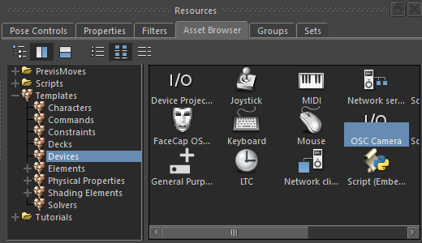
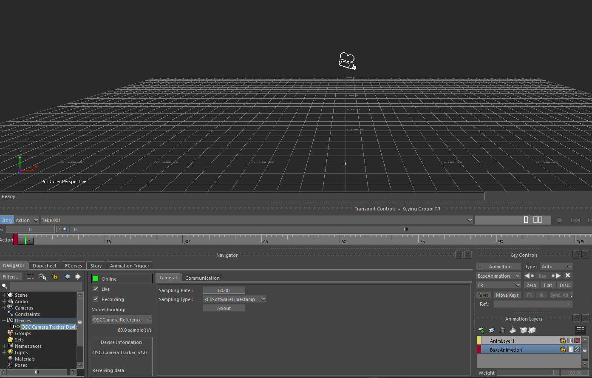
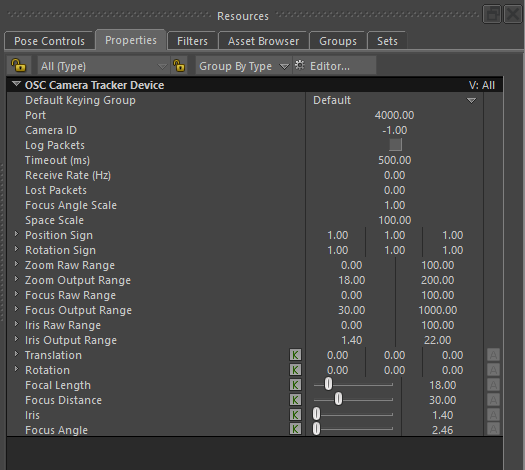
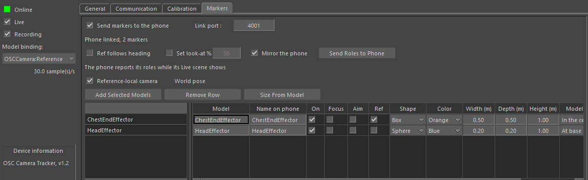
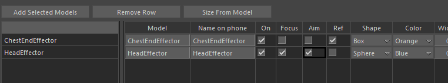

Before you start
You need Camera Motion Studio on an Android phone, MotionBuilder on a Windows workstation, and both devices on the same local network. Install the plugin version that matches your MotionBuilder installation and keep it up to date alongside the phone app.
Lite includes live pose, lens, and scene markers, with sessions up to five minutes at 30 Hz. Pro adds unlimited sessions, streaming up to 60 Hz, OSC transport buttons, and phone-side FBX export. The MotionBuilder plugin is separate from the app plan.
Install the plugin
- Open the plugin's GitHub Releases page and expand the release's Assets.
- Run
Setup_TechStoryOSCCamera_MoBu.exeand select the installed MotionBuilder version, or place the matchingdevice_oscCamera.dllin that version'sbin\x64\pluginsfolder. - Restart MotionBuilder. In Asset Browser > Templates > Devices, drag OSC Camera Tracker Device into the scene.

Set up the phone
New to the app? The app guide explains each mode and setting mentioned below.
In Camera Motion Studio's setup wizard, select MotionBuilder and enter the workstation's local IP address and the plugin's UDP port (default 4000). The wizard selects OSC and Unicast, sets the app's Space scale to 1 (life size), and enables the OBS and NDI return-viewfinder options.
For manual setup, use Settings > Stream with OSC, the same Target IP and Port, and Unicast. Keep the app's Default axis mapping. The phone sends positions in metres and the plugin converts them to MotionBuilder's centimetres, so app Space scale 1 with the device's Space Scale at 1 gives life-size motion. To make the camera travel further than you walk, raise the app's Space scale in Settings > Axis mapping or on the Pose tab. Set the factor in one place and leave the device's Space Scale at 1.
Connect the camera
- Select the device under Navigator > Devices. In Communication, match its UDP Port to the phone's Target Port. In General, set Sampling Rate to the phone's stream rate and keep Sampling Type at
kFBHardwareTimestamp. - Put the device Online and start streaming on the phone. Status changes from Listening on UDP port to Receiving data.
- In Model binding, pick or create a camera and bind it to the Camera template. Zero the phone pose at your intended starting position.

The default Playback Mode: Auto adjusts delay to network jitter. Defaults are Balanced responsiveness, Playback Delay 0 ms as the minimum and Max Auto Delay 60 ms. Fixed delay uses a chosen delay; at 0 it extrapolates the latest sample. Newest sample shows the newest received pose without interpolation or extrapolation. Watch Delay In Use and Frames I/E/H to see the result.
Lens and sensor size
Calibrate zoom, focus, and iris in the phone's Settings > Lens. The device uses calibrated zoom as focal length and focus as distance; its focus angle drives MotionBuilder's depth-of-field cone when Use Depth of Field is enabled on the camera. Iris arrives as a separate f-number output for a relation constraint. Uncalibrated channels can instead be mapped with the device's Raw Range and Output Range properties.
With Apply Sensor Size on, the plugin also sets the bound camera's film back to the sensor size sent by the app. This keeps the field of view aligned with the phone's 3D view.

Record a tracked take
Enable Recording on the online device to key the incoming camera motion. The plugin drops repeated sensor samples and creates one key per real sample at its capture time, so network arrival jitter does not become uneven key timing. Stop the device's recording and review the keys with MotionBuilder's animation tools.
For a take independent of live packet delivery, record locally in Camera Motion Studio and export FBX with Pro, then import the take into MotionBuilder. Phone-side recording preserves the source motion even if packets are lost on Wi-Fi. New exports use centimetre coordinates with unit node scale. Calibrate the lens before recording; rig/look-at, effects and smoothing choices affect what is exported. FBX export must be available in your installed app version.
A take stores the metres that were streamed, the app's Space scale included, and the FBX is written in centimetres, so an import matches the live device at the same Space scale. The device's own Space Scale multiplier is not in the file: keep it at 1, with the export Position scale at 1, when you compare. Check travel and calibrated focus on a known-distance take before substituting an import for live keys; changing export Position scale also changes focus distance.
Run transport from the phone
With Pro, the app's OSC buttons control play, stop, record, go to start or end, and step a frame. Under Settings > OSC buttons, set their destination to the MotionBuilder workstation and their port to the device's UDP port, normally 4000.
The device must be Online with Remote Control enabled. Buttons work independently of the camera protocol and while the pose stream is stopped. Repeated copies of a press are acted on once.

Send scene markers to the phone
The plugin can send MotionBuilder scene models to the phone's read-only Live scene. The operator can aim at them and hold focus on a chosen point.
Markers give the operator feedback from the real scene without streaming a rendered image back to the phone. Only each marker’s position, size, colour and role are sent, far less data than a video frame, so the phone draws them in its 3D view with much less lag than a streamed picture. That makes them well suited to framing and following a subject while you move the camera. When you need to see the full render, add the OBS viewfinder described below.
- On the phone, enable Settings > Stream > Scene link > Accept a marker link. Keep the OSC pose stream running so the plugin can find the phone.
- In the device's Markers tab, select scene models and choose Add Selected Models. Set the shape, size, colour, and focus/aim point as needed.
- Enable Send markers to the phone and tap Allow on the phone. The device's Phone Link status reports when the markers are linked.
The link sends up to 16 markers. Use the app's Default axis mapping for look-at. The device's own camera cannot be a marker.


Roles and reference cameras
The current Markers table has independent Focus, Aim, and Ref switches. One model can hold any combination; assigning a role takes only that role off its previous model. Mirror the phone preserves combinations chosen by the operator, and Send Roles to Phone reapplies the table's assignments.
For a reference camera, assign Ref to an exported point/base anchor and choose Ref follows heading if the camera should turn with it. With Reference-Local Camera enabled, the device uses the current scene reference to place supported local poses. Reference scale and tilt are not inherited. Camera Source explains local placement or world fallback when the reference cannot be resolved, the phone sends WORLD, or the option is off.
Recorded keys always use the phone world pose, so they can differ from the current scene-reference preview.


See MotionBuilder on the phone
Camera tracking and the return image are separate connections. Capture the MotionBuilder viewport in OBS Studio, then send the OBS program output to the phone over WHIP or NDI while OSC continues to drive the camera.

Connection checks
- If status stays on Listening or No data, check the workstation IP, matching UDP port, OSC stream, and firewall permission. Take the device Offline and Online again after changing its port.
- If the camera scale is wrong, check the app's Space scale and the device's Space Scale; for life size both are 1. Keep Default axis mapping. The current conversion uses scene X right, Y up, Z back, with camera pre-rotation handled by the plugin; there are no device sign properties.
- Compare Stream rate (Hz) in the phone's Stream settings with the device's Receive Rate (Hz). These show the actual sending and receiving rates. If the receive rate is much lower, check Wi-Fi quality and that the device's Sampling Rate matches the phone's stream rate.
Update both the app and plugin if packets arrive but the camera does not move. See the plugin repository for more information about plugin settings.